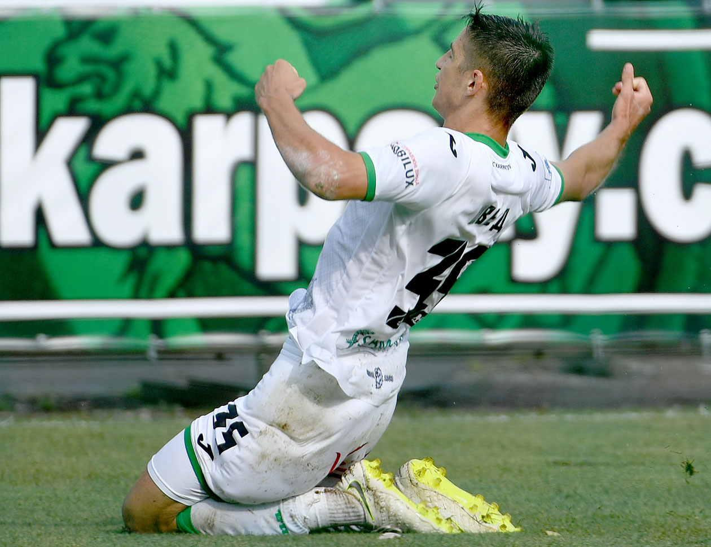
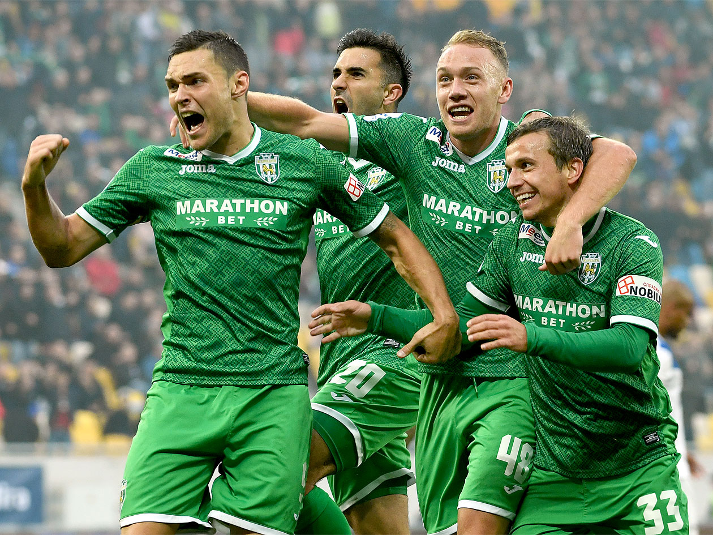

News

| Прем’єр-ліга. «Карпати» – «Арсенал-Київ» – 1:2 |
|---|
| Перший виїзний поєдинок для «зелено-білих» у новому сезоні неабияк запам’ятався як для команди, так і для вболівальників. Поступаючись по ходу зустрічі 0:2, карпатівці зуміли відігратись та здобути на виїзді важливе очко. Схожий сценарій за тиждень розгортався вже у Львові, у грі «Карпат» з київським «Арсеналом». Однак, цього разу «зелено-білим» не вистачило одного м’яча... |

| Прем’єр-ліга. «Львів» – «Карпати» – 1:1 |
|---|
| Напружене львівське дербі завершилося внічию 1:1. Забиті голи команди відклали на другий тайм. Сергій Мякушко у своєму стилі чудово виконав штрафний, а нічию номінальним господарям приніс дует Западня-Бруно |

| Прем’єр-ліга. «Динамо» – «Карпати» – 0:2 |
|---|
| «Карпати» приїхали до Києва після прикрої поразки від «Арсенала». Зрештою, динамівці також мали клопоти в останніх поєдинках – «Аякс» вибив їх із Ліги чемпіонів, а «Чорноморець» здобув очко наприкінці гри. Жозе Мораіш вніс певні корективи у стартовий склад – Олексій Гуцуляк вийшов на позиції чистого форварда, Карраскаль змістився глибше, а Швед з Мякушком опинилися на фланзі атаки. |

| Прем’єр-ліга. «Чорноморець» – «Карпати» – 0:5 |
|---|
| Гра в Одесі почалася для «Карпат» ідеально. Уже на першій хвилині Карраскаль скористався помилкою оборони «Чорноморця» і пробивав по воротах, але на шляху до цілі м'яч влучив у руку Грачову – пенальті. Вирок судді точно виконав Мар'ян Швед і це 0:1. |